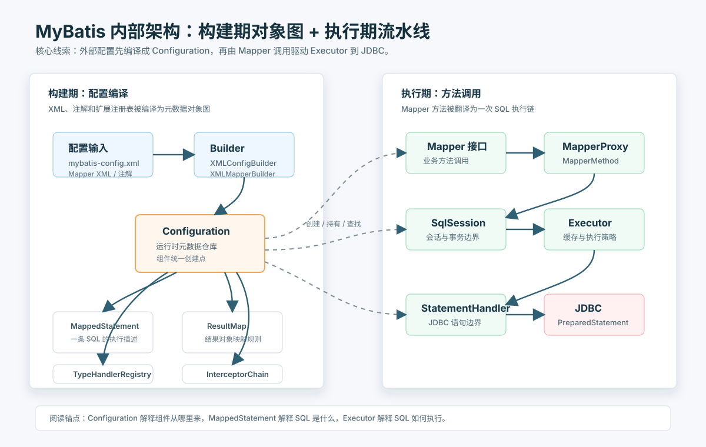
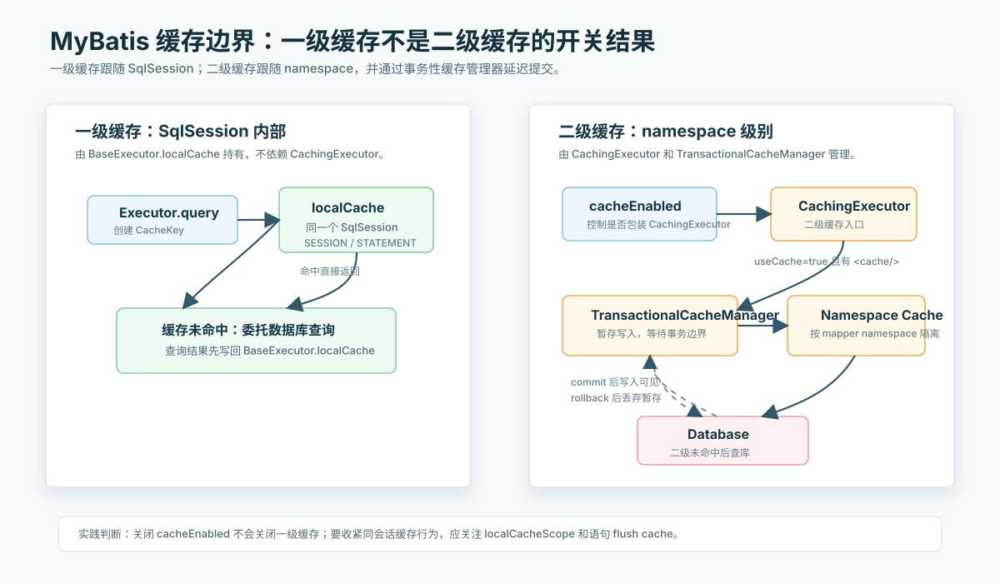
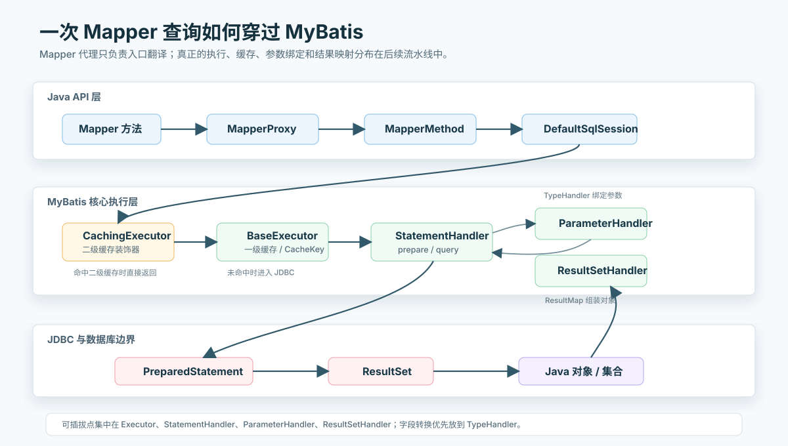

MyBatis 内部架构深度解析：从 Mapper 方法到 JDBC 执行链
MyBatis 的内部结构并不复杂，但很容易被看散：SqlSession、MapperProxy、MappedStatement、Executor、StatementHandler、TypeHandler、一级缓存、二级缓存、插件链分别出现在不同包里，单看任何一个类都像是局部技巧。把它们放回完整调用链之后，MyBatis 的设计会变得很清楚：
MyBatis 的核心不是“把对象自动映射成表”，而是“把 Java 方法稳定地映射到一条可执行的 SQL 描述，再把执行过程拆成可替换的流水线组件”。
本文以 MyBatis 3.5.19 的官方文档与源码 XRef 为基准，重点讨论 MyBatis 运行时内部架构，不展开 MyBatis-Spring 的事务同步、Spring Boot 自动装配，也不讨论 MyBatis-Plus 等增强框架。
总体架构
MyBatis 可以分成两条主线：构建期主线和执行期主线。
构建期负责把 XML、注解、类型别名、类型处理器、插件、缓存配置等材料编译成一个 Configuration 对象。执行期从 SqlSessionFactory 打开 SqlSession，再通过 MapperProxy 或 SqlSession API 找到 MappedStatement，一路委托到 Executor、StatementHandler、ParameterHandler、ResultSetHandler 和 JDBC。

这个图里最重要的是 Configuration。它不是普通配置类，而是 MyBatis 的运行时元数据仓库。MappedStatement、ResultMap、Cache、Interceptor、TypeHandler、ObjectFactory、LanguageDriver、MapperRegistry 都挂在这里。一次查询真正运行时，MyBatis 不是重新解析 XML，而是围绕 Configuration 里已经建好的对象图做派发。
[PATTERN] 元数据对象图模式：框架启动时把外部描述语言编译成内存对象图，运行时只做查表、组装和委托。MyBatis 的 XML 不是运行时脚本，而是构建 MappedStatement、SqlSource、ResultMap 等对象的输入材料。
三个入口对象
官方文档把 MyBatis 的核心入口压缩成三个对象：SqlSessionFactoryBuilder、SqlSessionFactory、SqlSession。这三个对象刚好对应三个生命周期。
| 对象 | 生命周期 | 线程安全 | 职责 |
|---|---|---|---|
SqlSessionFactoryBuilder |
构建期临时对象 | 不应复用为服务对象 | 读取配置，构造 SqlSessionFactory |
SqlSessionFactory |
应用级单例 | 可长期复用 | 持有 Configuration，创建 SqlSession |
SqlSession |
请求/事务级短生命周期对象 | 不可跨线程共享 | 持有 Executor，执行 CRUD 与提交回滚 |
SqlSessionFactoryBuilder 的存在感很弱，但它划出了一条边界：解析配置不是每次 SQL 执行都做的事。构建完成后，DefaultSqlSessionFactory 内部持有同一个 Configuration。每次 openSession()，工厂从 Environment 中取出 DataSource 和 TransactionFactory，创建 Transaction，再由 Configuration.newExecutor() 创建执行器，最后组装成 DefaultSqlSession。
sequenceDiagram
participant App as App
participant SFB as SqlSessionFactoryBuilder
participant XCB as XMLConfigBuilder
participant CFG as Configuration
participant SSF as DefaultSqlSessionFactory
participant TXF as TransactionFactory
participant EX as Executor
participant SS as DefaultSqlSession
App->>SFB: build(inputStream)
SFB->>XCB: parse()
XCB->>CFG: 填充环境、mapper、插件、类型处理器
SFB-->>App: SqlSessionFactory
App->>SSF: openSession()
SSF->>TXF: newTransaction(dataSource, ...)
SSF->>CFG: newExecutor(transaction, executorType)
CFG-->>SSF: Executor
SSF-->>App: DefaultSqlSession(Configuration, Executor)这个创建过程解释了一个常见误解：SqlSession 不是轻量的“数据库连接包装器”。它确实通过 Transaction 间接拿连接，但它更重要的身份是一次 MyBatis 执行上下文，里面有本次会话的 Executor、一级缓存、脏数据标记和提交回滚边界。
DefaultSqlSessionFactory.openSessionFromDataSource(...) 的源码骨架可以压缩成四步：
1 | |
这几行保留了旧文里最关键的观察：MyBatis 创建 SqlSession 时不是直接 new 一个 JDBC 连接，而是沿着 Environment -> TransactionFactory -> Transaction -> Executor -> DefaultSqlSession 逐层抽象。Environment 解决数据源和事务工厂从哪里来，TransactionFactory 解决连接事务由谁管理，Executor 解决 SQL 用什么策略执行，DefaultSqlSession 才是暴露给应用的会话门面。
Configuration 是总装配台
Configuration 的职责密度很高，几乎所有核心组件都能从这里追到。它至少承担四类职责。
第一类是注册表。typeAliasRegistry 处理别名，typeHandlerRegistry 处理 Java 类型与 JDBC 类型转换，mapperRegistry 处理 Mapper 接口与代理工厂，languageRegistry 处理脚本语言驱动。
第二类是语句仓库。mappedStatements 保存每个 SQL 语句的最终描述，key 通常是 namespace.id。Mapper 接口方法能够定位 SQL，本质上靠的就是这个 id 约定：接口全限定名作为 namespace，方法名作为 statement id。
第三类是对象工厂。Configuration 负责创建 Executor、StatementHandler、ParameterHandler、ResultSetHandler，并在这些对象创建之后调用 interceptorChain.pluginAll()。插件之所以能拦截执行器、语句处理器、参数处理器和结果集处理器，是因为这些对象都经过 Configuration 的统一创建点。
第四类是全局行为开关。比如 cacheEnabled、lazyLoadingEnabled、mapUnderscoreToCamelCase、defaultExecutorType、localCacheScope 等配置并不散落在各处，而是在运行时被组件按需读取。
flowchart LR
CFG["Configuration"]
CFG --> Registry["注册表：TypeAlias / TypeHandler / Mapper / LanguageDriver"]
CFG --> Statements["语句仓库：MappedStatement / ResultMap / Cache"]
CFG --> Factories["组件工厂：Executor / StatementHandler / ParameterHandler / ResultSetHandler"]
CFG --> Settings["行为开关：cache / lazyLoading / executorType / localCacheScope"]
Factories --> Plugins["InterceptorChain.pluginAll(...)"][PATTERN] 总装配台模式：一个框架级配置对象既保存元数据，也提供核心组件的统一创建点。统一创建点让插件、默认策略、全局开关有了稳定注入位置。
Mapper XML 如何变成 MappedStatement
Mapper XML 的解析不是简单地把 SQL 字符串放进 Map。MyBatis 会把一条 <select>、<insert>、<update>、<delete> 编译成 MappedStatement，它是执行期最核心的语句描述对象。
一个 MappedStatement 通常包含这些信息：
| 字段/关联对象 | 作用 |
|---|---|
id |
语句唯一标识，通常是 namespace.methodName |
sqlSource |
SQL 来源，负责根据参数生成 BoundSql |
statementType |
STATEMENT、PREPARED、CALLABLE |
sqlCommandType |
SELECT、INSERT、UPDATE、DELETE |
parameterMap |
参数映射描述，现代用法里更多由 ParameterMapping 承担 |
resultMaps |
结果集到对象的映射规则 |
cache |
namespace 级二级缓存引用 |
flushCacheRequired / useCache |
缓存刷新和读取策略 |
keyGenerator |
主键回填策略 |
Mapper XML 解析大致经过几层：
flowchart TD
MapperXML["Mapper XML"] --> XMLMapperBuilder["XMLMapperBuilder"]
XMLMapperBuilder --> Namespace["namespace 绑定"]
XMLMapperBuilder --> ResultMap["解析 resultMap"]
XMLMapperBuilder --> Cache["解析 cache / cache-ref"]
XMLMapperBuilder --> Statements["解析 statement 节点"]
Statements --> XMLStatementBuilder["XMLStatementBuilder"]
XMLStatementBuilder --> LanguageDriver["LanguageDriver"]
LanguageDriver --> SqlSource["SqlSource"]
XMLStatementBuilder --> MappedStatement["MappedStatement"]
MappedStatement --> Configuration["Configuration.mappedStatements"]SqlSource 是这里的关键。MyBatis 并不把 XML 中的 SQL 直接当字符串执行，而是把它包装成能在运行时产出 BoundSql 的对象。
静态 SQL 会尽量提前解析。动态 SQL 则会被解析成 SqlNode 树，比如 IfSqlNode、ForEachSqlNode、ChooseSqlNode、TrimSqlNode、MixedSqlNode。运行时传入参数后，DynamicSqlSource 通过这棵树生成最终 SQL，再产生 BoundSql。
flowchart LR
XMLScript["XML SQL 节点"] --> XMLScriptBuilder["XMLScriptBuilder"]
XMLScriptBuilder --> StaticText["StaticTextSqlNode"]
XMLScriptBuilder --> If["IfSqlNode"]
XMLScriptBuilder --> ForEach["ForEachSqlNode"]
XMLScriptBuilder --> Choose["ChooseSqlNode"]
XMLScriptBuilder --> Trim["TrimSqlNode"]
StaticText --> Mixed["MixedSqlNode"]
If --> Mixed
ForEach --> Mixed
Choose --> Mixed
Trim --> Mixed
Mixed --> DynamicSqlSource["DynamicSqlSource"]
DynamicSqlSource --> BoundSql["BoundSql: SQL + ParameterMapping + additionalParameters"]BoundSql 是 SQL 执行前的最后形态：它包含最终 SQL 字符串、参数映射列表、原始参数对象，以及动态 SQL 产生的额外参数。#{} 会变成 ? 和 ParameterMapping；${} 会直接拼进 SQL 字符串。前者走 JDBC 参数绑定，后者是字符串替换，必须只用于白名单字段名、排序方向等无法参数化的位置。
Mapper 接口为什么能执行 SQL
Mapper 接口本身没有实现类。sqlSession.getMapper(UserMapper.class) 返回的是 JDK 动态代理，代理背后是 MapperProxy。
调用链可以写成这样：
1 | |
MapperProxy 只负责代理分发，不真正理解 SQL。真正把“Java 方法”翻译成“MyBatis 命令”的是 MapperMethod。它内部有两个重要对象：
| 内部对象 | 职责 |
|---|---|
SqlCommand |
根据 Mapper 接口和方法名解析 MappedStatement id，并识别 SQL 命令类型 |
MethodSignature |
解析方法返回值、参数名、RowBounds、ResultHandler、是否返回集合/Map/Optional 等 |
这就是为什么 Mapper 方法签名可以看起来很自然：返回 List<User> 时调用 selectList，返回单个对象时调用 selectOne，返回 Map 时走 selectMap，增删改则返回影响行数或布尔值。方法签名层面的差异，被 MapperMethod 翻译成了对 SqlSession API 的不同调用。
sequenceDiagram
participant App as 业务代码
participant Proxy as MapperProxy
participant Method as MapperMethod
participant Session as DefaultSqlSession
participant Config as Configuration
participant Executor as Executor
App->>Proxy: mapper.selectById(id)
Proxy->>Method: execute(sqlSession, args)
Method->>Config: 查找 namespace.method 的 MappedStatement
Method->>Session: selectOne(statementId, param)
Session->>Executor: query(mappedStatement, param, ...)[PATTERN] 接口代理到命令对象模式：Mapper 接口负责提供类型安全的 Java 入口，MapperProxy 负责拦截，MapperMethod 负责把方法语义翻译成框架内部命令。接口没有实现类，但方法调用并不是“魔法”，只是被稳定地映射到 MappedStatement。
Executor 是执行主干
Executor 是 SQL 执行链的主干。SqlSession 面向用户，StatementHandler 面向 JDBC，中间调度、缓存、事务、延迟加载、批处理都集中在 Executor。
MyBatis 内置三种基础执行器：
| 执行器 | 适用场景 | 核心行为 |
|---|---|---|
SimpleExecutor |
默认场景 | 每次执行创建新的 Statement |
ReuseExecutor |
同一 SQL 重复执行 | 复用相同 SQL 对应的 Statement |
BatchExecutor |
批量写入 | 暂存多个更新，等待 flushStatements() |
Configuration.newExecutor() 会根据 ExecutorType 选择基础执行器。如果全局 cacheEnabled=true，还会用 CachingExecutor 包一层。最后再套插件代理。
对应的源码骨架如下：
1 | |
这里有两个容易漏掉的细节。第一，ExecutorType 有两次兜底：先取全局 defaultExecutorType，仍为空再退回 SIMPLE。第二，CachingExecutor 是装饰器，不是第四种基础执行器；插件代理又包在缓存装饰器外层。因此一次执行可能同时经过“基础执行器策略”“二级缓存装饰器”“插件代理”三层结构。
flowchart TD
TX["Transaction"] --> NewExecutor["Configuration.newExecutor(tx, executorType)"]
NewExecutor --> Choose{"ExecutorType"}
Choose -->|SIMPLE| Simple["SimpleExecutor"]
Choose -->|REUSE| Reuse["ReuseExecutor"]
Choose -->|BATCH| Batch["BatchExecutor"]
Simple --> CacheCheck{"cacheEnabled?"}
Reuse --> CacheCheck
Batch --> CacheCheck
CacheCheck -->|true| Caching["CachingExecutor(delegate)"]
CacheCheck -->|false| Plugin
Caching --> Plugin["InterceptorChain.pluginAll(executor)"]
Plugin --> Executor["最终 Executor"]BaseExecutor 提供了模板方法：先检查关闭状态和一级缓存，再决定是否调用子类的 doQuery()。真正和 JDBC Statement 打交道的是子类的 doQuery() / doUpdate()，但一级缓存、延迟加载、事务提交回滚这类横切逻辑放在基类里。
1 | |
旧文里的 BaseExecutor.query(...) 片段还保留了几个判断点：
- 查询前如果执行器已关闭，直接抛出
ExecutorException。 queryStack == 0 && ms.isFlushCacheRequired()时会清空本地缓存。- 只有
resultHandler == null时才尝试从localCache读取结果；自定义ResultHandler会绕开这条缓存读取路径。 - 数据库查询前会把
EXECUTION_PLACEHOLDER放进本地缓存，查询完成后移除占位并写入真实结果；这用于处理嵌套查询中的循环引用和延迟加载场景。 StatementType.CALLABLE的输出参数会额外进入localOutputParameterCache。- 最外层查询结束后会触发
deferredLoads，并在localCacheScope=STATEMENT时清空一级缓存。
这个结构很典型：BaseExecutor 不知道具体如何创建和复用 Statement，但它知道一次查询必须遵守哪些框架级规则。SimpleExecutor、ReuseExecutor、BatchExecutor 只替换真正执行 JDBC 的那部分策略。
[PATTERN] 模板方法 + 策略执行器模式：BaseExecutor 固化查询、缓存、提交、回滚的骨架，具体执行器替换 Statement 创建、复用、批处理策略。
StatementHandler 是 JDBC 边界
如果说 Executor 是执行主干，StatementHandler 就是 MyBatis 和 JDBC 的接缝。
RoutingStatementHandler 根据 MappedStatement.statementType 选择具体实现：
statementType |
StatementHandler | JDBC 对象 |
|---|---|---|
STATEMENT |
SimpleStatementHandler |
Statement |
PREPARED |
PreparedStatementHandler |
PreparedStatement |
CALLABLE |
CallableStatementHandler |
CallableStatement |
BaseStatementHandler 在构造时会创建两个关键协作者：ParameterHandler 和 ResultSetHandler。前者负责把 Java 参数绑定到 JDBC PreparedStatement，后者负责把 ResultSet 映射成 Java 对象。
flowchart TD
Executor["Executor"] --> RSH["RoutingStatementHandler"]
RSH --> SimpleSH["SimpleStatementHandler"]
RSH --> PreparedSH["PreparedStatementHandler"]
RSH --> CallableSH["CallableStatementHandler"]
PreparedSH --> PH["ParameterHandler"]
PreparedSH --> RSH2["ResultSetHandler"]
PH --> TH["TypeHandler"]
RSH2 --> RM["ResultMap"]
RSH2 --> OF["ObjectFactory / MetaObject"]
PreparedSH --> JDBC["PreparedStatement"]一次 PreparedStatement 查询可以拆成三个动作：
prepare(connection, timeout)：创建 JDBCPreparedStatement，设置超时、fetchSize 等。parameterize(statement)：通过ParameterHandler绑定参数。query(statement, resultHandler)：执行 SQL，并交给ResultSetHandler处理结果。
这三个动作分开之后，插件也就有了清晰拦截点。分页插件通常拦截 Executor 或 StatementHandler，审计插件常拦截 Executor，参数加密或类型转换更适合靠 TypeHandler，结果处理则靠 ResultSetHandler 或自定义映射规则。
TypeHandler 是类型系统边界
TypeHandler 是 MyBatis 处理 Java 类型和 JDBC 类型差异的核心扩展点。它的边界很明确：参数入库时调用 setParameter()，结果出库时调用 getResult()。
1 | |
TypeHandlerRegistry 会根据 Java 类型和 JDBC 类型选择处理器。常见类型有内置处理器，枚举、JSON、加密字段、数据库专有类型则通常需要自定义处理器。
TypeHandler 与插件的差别在于粒度。插件拦的是执行过程，适合处理“这次 SQL 调用如何执行”的问题；TypeHandler 拦的是值转换，适合处理“这个字段如何进出数据库”的问题。把字段级转换写进插件，通常会让逻辑混在 SQL 执行链里，难以复用。
[PATTERN] 类型边界模式：框架不让业务对象直接碰 JDBC 细节，而是在 Java 类型与 JDBC 类型之间插入一个稳定转换层。字段加密、枚举编码、JSON 列、时间类型兼容都应优先落在这个层次。
ResultSetHandler 如何组装对象
结果映射是 MyBatis 内部最复杂的部分之一。简单场景下，列名和属性名对应，DefaultResultSetHandler 用 ObjectFactory 创建对象，再用 MetaObject 写入属性。复杂场景则会牵涉 ResultMap、嵌套映射、延迟加载、自动映射、构造器注入和鉴别器。
flowchart TD
RS["ResultSet"] --> Wrapper["ResultSetWrapper"]
Wrapper --> RMap["ResultMap"]
RMap --> Create["ObjectFactory 创建结果对象"]
Create --> Meta["MetaObject 包装对象"]
Meta --> Auto["自动映射列到属性"]
Meta --> Explicit["按 ResultMapping 显式映射"]
Explicit --> Nested{"嵌套 resultMap / select?"}
Nested -->|resultMap| NestedResult["嵌套结果集组装"]
Nested -->|select| Lazy["延迟加载代理"]
Auto --> Result["返回对象 / 集合"]
NestedResult --> Result
Lazy --> ResultMetaObject 值得单独注意。它把对象属性读写、Map 访问、集合访问统一到同一套反射包装接口里。MyBatis 的参数读取和结果写入都大量依赖它，因此业务对象可以是普通 JavaBean，也可以是 Map 或更复杂的属性路径。
结果映射的核心难点不在“把一列赋给一个字段”，而在“如何保持对象身份”。一对多嵌套结果映射时，同一个父对象会在多行结果中重复出现。MyBatis 需要根据 id 映射和缓存 key 合并对象，否则 join 查询会产生重复父对象。这也是为什么复杂 resultMap 里应该认真声明 <id>：它不只是文档信息，也会影响嵌套结果组装。
缓存体系：一级缓存与二级缓存不是同一件事
MyBatis 有两层缓存，位置和生命周期完全不同。
最小配置只涉及两个开关：
1 | |
cacheEnabled 的默认值是 true，但它只决定是否启用二级缓存装饰器；localCacheScope 的默认值是 SESSION，它决定一级缓存是保留到会话结束，还是在每条语句后按 STATEMENT 粒度清掉。
| 缓存 | 所在位置 | 生命周期 | 默认行为 | 主要用途 |
|---|---|---|---|---|
| 一级缓存 | BaseExecutor.localCache |
同一个 SqlSession 内 |
默认开启 | 避免同会话重复查询，支持嵌套查询循环引用处理 |
| 二级缓存 | namespace 对应的 Cache，由 CachingExecutor 管理 |
跨 SqlSession，按 namespace |
需要 mapper 启用 <cache/> 才真正使用 |
缓存较稳定的查询结果 |
一级缓存不靠 CachingExecutor。只要走 BaseExecutor，本地缓存就存在。localCacheScope=SESSION 时，同一个 SqlSession 内相同 cache key 的查询会命中；localCacheScope=STATEMENT 时，每条语句执行后清空本地缓存，缓存主要只服务执行过程中的循环引用和嵌套查询。
二级缓存靠 CachingExecutor。当 cacheEnabled=true 且 MappedStatement 有 namespace cache，并且该语句 useCache=true、没有自定义 ResultHandler 时，CachingExecutor 会通过 TransactionalCacheManager 读写二级缓存。二级缓存写入不是简单地“查询完立刻全局可见”，而是与事务提交/回滚绑定：提交后进入缓存，回滚则丢弃本次暂存。

CacheKey 决定“同一条查询”如何判等。它不是只用 SQL 字符串做 key，而是把多个维度按顺序 update(...) 进去：
1 | |
判等时还会同时比较内部 hashcode、checksum、count 和 updateList 中每个对象。旧文里强调的点仍然成立：同一个 SqlSession 内，只有 statement id、分页边界、最终 SQL、参数值、环境 id 都一致时，一级缓存才会命中。动态 SQL 只要生成的最终 SQL 或参数序列不同，就会得到不同的缓存 key。
CachingExecutor.query(...) 的骨架则是另一层：
1 | |
这段代码说明二级缓存有三道门槛：MappedStatement 必须能拿到 namespace cache，语句自身必须允许 useCache，并且不能使用自定义 ResultHandler。未满足这些条件时，查询直接委托给基础执行器；二级缓存没有命中时，也只是先查库再把结果交给 TransactionalCacheManager 暂存。
这里有几个实践结论：
cacheEnabled=false主要影响二级缓存包装，不等于关闭一级缓存。localCacheScope控制一级缓存策略；这是排查“同一个SqlSession内重复读旧数据”时更容易被忽略的配置。- 同一个
SqlSession里查询后再更新，如果语句配置要求 flush cache，会清理相关缓存。 - 二级缓存按 namespace 组织，跨 mapper 共享需要
cache-ref，否则不同 namespace 的缓存互不相干。 - 返回可变对象时要谨慎使用二级缓存。缓存保存的是结果对象，业务代码修改对象状态可能造成难以排查的污染风险，除非通过序列化缓存、只读约束或业务规范隔离。
[PATTERN] 事务性缓存装饰器模式：CachingExecutor 不替代基础执行器，而是装饰基础执行器；TransactionalCacheManager 把缓存写入延后到事务边界，让二级缓存遵守提交/回滚语义。
插件链的边界
MyBatis 插件并不是任意 AOP。官方插件只支持拦截四类对象的方法：
ExecutorStatementHandlerParameterHandlerResultSetHandler
插件通过 Interceptor、Invocation、Plugin 和 JDK 动态代理实现。每个目标对象创建后，Configuration 会调用 interceptorChain.pluginAll(target)，按注册顺序逐层包装。
flowchart LR
Target["Executor / StatementHandler / ParameterHandler / ResultSetHandler"] --> I1["Interceptor A"]
I1 --> I2["Interceptor B"]
I2 --> I3["Interceptor C"]
I3 --> Final["代理对象"]插件能力强，但也有清晰代价：它拦的是框架内部协议。一个分页插件如果改写 BoundSql，就必须理解参数映射、cache key、count 查询、方言差异、RowBounds 行为；一个审计插件如果在 Executor.update 里读取参数对象，就必须处理 Map、集合、单参数、多参数、@Param 等不同形态。
插件适合做执行级横切逻辑，不适合承载领域逻辑。字段级转换用 TypeHandler，对象创建用 ObjectFactory，SQL 语言扩展用 LanguageDriver，结果结构变化优先用 resultMap。插件应该是最后的扩展手段，而不是第一个。
事务与连接在哪里
MyBatis 的事务抽象很薄，主要围绕 Transaction 接口展开。Environment 同时持有 DataSource 和 TransactionFactory。打开 SqlSession 时，DefaultSqlSessionFactory 用事务工厂创建 Transaction，执行器通过事务对象获取连接、提交、回滚和关闭。
flowchart TD
Environment["Environment"] --> DS["DataSource"]
Environment --> TXF["TransactionFactory"]
TXF --> TX["Transaction"]
TX --> Conn["Connection"]
Executor --> TX
StatementHandler --> ConnMyBatis 自带 JdbcTransactionFactory 和 ManagedTransactionFactory。前者直接管理 JDBC 连接的提交、回滚、关闭；后者把事务管理交给容器。在 Spring 集成场景中，真正常见的是 MyBatis-Spring 接管 SqlSession 生命周期，并把连接绑定到 Spring 事务同步机制。这个部分属于集成层，不改变 MyBatis 核心执行链的结构。
一次查询的完整路径
把上面的组件串起来，一次普通 Mapper 查询大致如下：
1 | |
执行链可以压缩成下面这张图：

这条路径解释了 MyBatis 的可扩展性为什么集中在几个点上。Mapper 方法名定位语句，SqlSource 生成 SQL，Executor 管执行策略和缓存，StatementHandler 管 JDBC，TypeHandler 管值转换，ResultSetHandler 管对象组装。每一层只承担一个方向的变化。
组件关系速查
| 组件 | 上游 | 下游 | 关键问题 |
|---|---|---|---|
SqlSessionFactoryBuilder |
配置输入流 | SqlSessionFactory |
如何把外部配置编译成 Configuration |
Configuration |
XML、注解、全局设置 | 全部运行时组件 | 元数据放在哪里，组件从哪里创建 |
MappedStatement |
Mapper XML / 注解 | Executor |
一条 SQL 的完整执行描述是什么 |
SqlSource |
XML 脚本 / 注解 SQL | BoundSql |
参数进入后最终 SQL 长什么样 |
MapperProxy |
Mapper 接口调用 | MapperMethod |
接口方法如何变成命令 |
SqlSession |
MapperMethod / 用户 API | Executor |
一次会话如何管理执行器和事务边界 |
Executor |
SqlSession |
StatementHandler |
执行策略、缓存、事务如何协调 |
StatementHandler |
Executor |
JDBC | 如何创建 Statement 并执行 |
ParameterHandler |
StatementHandler |
TypeHandler / JDBC |
Java 参数如何绑定到 SQL |
ResultSetHandler |
JDBC ResultSet | Java 对象 | 结果集如何变成对象图 |
TypeHandler |
参数/结果映射 | JDBC 类型 | Java 类型和数据库类型如何互转 |
Interceptor |
Configuration.pluginAll |
四类可拦截对象 | 横切逻辑插在哪里 |
设计模式视角
MyBatis 的源码适合用设计模式阅读，但不要停在“它用了某某模式”的标签层面。更有价值的是看每个模式解决的变化点。
| 模式 | 代表位置 | 解决的变化 |
|---|---|---|
| Builder | XMLConfigBuilder、XMLMapperBuilder、MappedStatement.Builder |
XML/注解输入复杂，最终对象需要稳定且完整 |
| Registry | TypeHandlerRegistry、MapperRegistry、LanguageDriverRegistry |
按类型、接口、语言查找扩展实现 |
| Dynamic Proxy | MapperProxy、插件 Plugin |
接口无实现类，运行时拦截方法调用 |
| Template Method | BaseExecutor、BaseStatementHandler |
固定执行骨架，延迟具体执行策略 |
| Decorator | CachingExecutor |
在不改基础执行器的情况下加入二级缓存 |
| Chain of Responsibility | InterceptorChain |
多个插件按顺序包装同一目标对象 |
| Strategy | ExecutorType、TransactionFactory、LanguageDriver、TypeHandler |
同一抽象下替换不同实现 |
| Adapter / Facade | MetaObject、ObjectWrapper |
统一 JavaBean、Map、Collection 的属性访问 |
[PATTERN] 窄接口多策略模式：MyBatis 的扩展点普遍很窄。TypeHandler 只管单值转换，LanguageDriver 只管 SQL 脚本，Executor 只管执行策略，TransactionFactory 只管事务对象创建。接口越窄，扩展越不容易污染主链路。
阅读源码的三条锚点
阅读 MyBatis 源码时，最容易陷入包和类名的细节。更有效的方式是抓三条锚点。
第一条锚点是 MappedStatement。任何 SQL 最后都要落到它。读懂 MappedStatement 的字段，就能理解 Mapper XML 里大部分配置为什么存在。
第二条锚点是 Executor.query()。它串起 BoundSql、CacheKey、一级缓存、二级缓存、StatementHandler 和事务边界。MyBatis 的运行时行为，大半都能从这里解释。
第三条锚点是 Configuration.newXxx()。凡是想找插件为什么能生效、某个处理器在哪里创建、默认策略在哪里替换，都应该回到 Configuration 的工厂方法。
1 | |
常见误区
误区一：关闭 cacheEnabled 就关闭了所有缓存。
cacheEnabled 控制的是是否包装 CachingExecutor，主要影响二级缓存。一级缓存属于 BaseExecutor.localCache，仍然存在。要改变一级缓存行为，需要看 localCacheScope 和语句的 flush cache 设置。
误区二：Mapper 代理直接执行 SQL。
MapperProxy 只做方法拦截和缓存 MapperMethod。SQL 执行仍然经过 SqlSession 和 Executor。Mapper 接口只是类型安全入口，不是执行引擎。
误区三：插件可以随意拦截 MyBatis 任意类。
插件只支持四类目标。拦截不到的类不是配置写法问题，而是 MyBatis 插件协议本身的边界。
误区四：动态 SQL 是运行时拼字符串。
动态 SQL 在构建期已经解析成 SqlNode 树，运行时是根据参数应用这棵树，生成 BoundSql。这比散乱字符串拼接有更清晰的参数映射和上下文。
误区五：resultMap 只是字段别名表。
resultMap 还承载对象身份、嵌套映射、延迟加载、构造器注入等规则。复杂 join 场景里，<id> 配置会影响父子对象合并。
小结
MyBatis 的架构可以用一句话收束：构建期把配置编译成 Configuration 里的元数据对象图，执行期把 Mapper 方法调用翻译成对 MappedStatement 的执行，再通过 Executor -> StatementHandler -> ParameterHandler / ResultSetHandler -> JDBC 这条流水线完成数据库访问。
它的克制也在这里。MyBatis 没有试图隐藏 SQL，而是把 SQL 的解析、参数绑定、结果映射、缓存和插件横切拆成了清晰组件。读源码时只要抓住 Configuration、MappedStatement、Executor 三个中心点，剩下的类大多都能放回自己的位置。
参考资料
- MyBatis 3.5.19 Release Notes
- MyBatis 官方文档：Getting started
- MyBatis 官方文档：Configuration
- MyBatis 官方文档：Dynamic SQL
- MyBatis 源码 XRef：Configuration
- MyBatis 源码 XRef：DefaultSqlSessionFactory
- MyBatis 源码 XRef：DefaultSqlSession
- MyBatis 源码 XRef：MapperProxy
- MyBatis 源码 XRef：MapperMethod
- MyBatis 源码 XRef：BaseExecutor
- MyBatis 源码 XRef：CachingExecutor
- MyBatis 源码 XRef：BaseStatementHandler
- MyBatis 源码 XRef：RoutingStatementHandler
- MyBatis 源码 XRef：DefaultParameterHandler
- MyBatis 源码 XRef：DefaultResultSetHandler
- MyBatis 源码 XRef：XMLConfigBuilder
- MyBatis 源码 XRef：XMLMapperBuilder
- MyBatis 源码 XRef：XMLScriptBuilder
- 深入浅出 MyBatis 之缓存机制